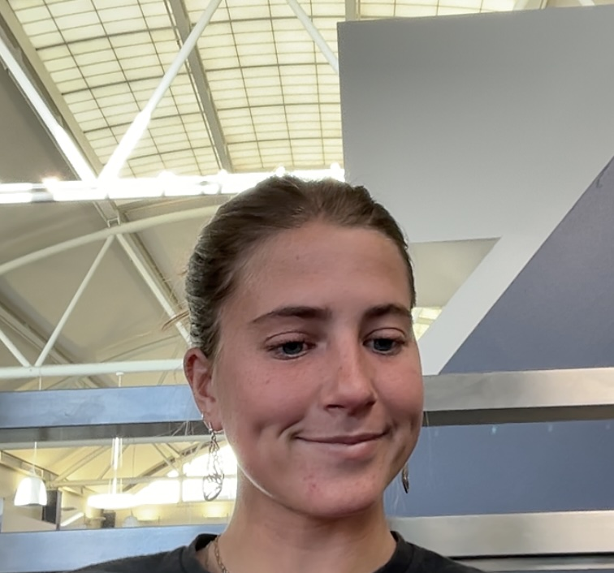

BYU Student · Musician · World Traveler · Harry Potter Enthusiast
Hi! I'm Kate — a student at Brigham Young University in Provo, Utah. I'm passionate about music, family, faith, and exploring the world one adventure at a time.
I recently returned from serving a full-time LDS mission in Brazil, where I lived for a year and a half, fell in love with the culture, and became fluent in Portuguese. That experience changed how I see the world.
Outside of school you'll find me playing guitar or piano, watching movies with my family, doing family history research at my church, or deep in another Harry Potter reread.
Brigham Young University
Provo, UT
English · Portuguese (fluent) · Spanish (learning)
Guitar & Piano
Family History Representative · LDS Missionary (Brazil)